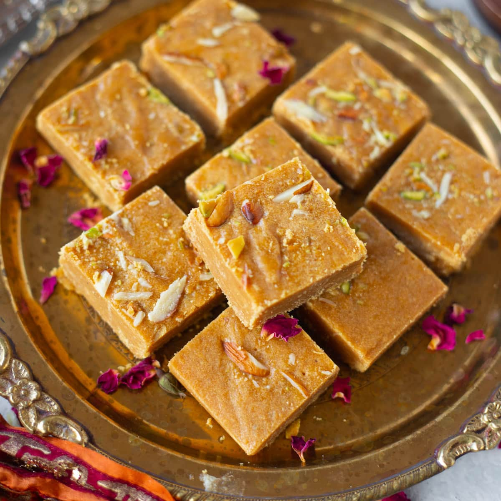

Gulab Jamun
Ingredients-
- 1 Nestlé MILKMAID Mini
- 2 cups (200 gm) Flour
- 600 gms Grated Paneer
- 200 gm Sooji/Rava
- 1½ tsp Baking Powder
- 1½ tsp Baking Soda
- For Frying Oil
- 2 litres Water
- 1 kg Sugar
- 6-8 nos Coarsely Crushed Cardamom
Recipe-
- Combine sugar and water in a pan and bring to a boil to create the syrup.
Remove from heat, add cardamom, and set aside to cool. - In a mixing bowl, combine flour, paneer, sooji, Nestlé MILKMAID, baking powder, and baking soda.
Mix gently to form a soft dough, avoiding over-kneading. - Divide the dough into 30-35 portions and gently shape them into round balls.
- Heat oil on low flame and fry the balls until they turn golden brown.
- Transfer the fried Gulab Jamuns into the cooled sugar syrup.
Once all the Gulab Jamuns are added, bring the syrup to a boil again briefly, then remove from heat.

Barfi
Ingredients-
- 3 cups milk powder
- 1 1/2 cups powdered sugar
- 1/2 cup + 3 tablespoons milk
- 3 tablespoons butter or ghee
- 1/2 to 1 teaspoon ground cardamom
- 1/4 teaspoon salt
- 1 teaspoon vanilla extract
- Approx. 2 tablespoons slivered pistachios
- To garnish: Saffron, rose buds, and silver leaf
Recipe-
- Grease a 9×6 baking pan.
- Heat a heavy bottom pan on medium to low heat.
Once hot, add in the butter and 1/2 cup of milk. Let the butter melt. - Once the butter melts, add in the milk powder stirring constantly.
Once the powder is incorporated with milk, gradually add in the powdered sugar. - If there are bits of dry powder left, add in the three tablespoons of milk.
If you need to add more milk, add a tablespoon at a time.
At this stage the mixture should have a paste like consistency. - While continuously stirring, cook the mixture for 8-9 minutes or until it easily leaves
the surface of the pan. The mixture should look like a dough. - Turn the heat off and add vanilla essence, cardamom, and a tablespoon of pistachios. Mix everything
well. Spread the mixture evenly on the greased pan and top the remaining tablespoon of pistachios. - Let the burfi set for at least three hours. Once set, it can be stored in an airtight container at room
temperature for up to seven days.
